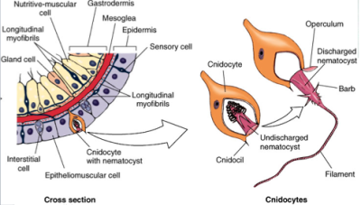

Cnidocytes pronounced "sn-eye-dough-sites" are the microscopic stinging cells that marine jellyfish (and other members of Phylum Cnidaria) use to defend themselves and capture their prey. They are what jellyfish carry around in their trailing tentacles that sting fish (and you) when they are contacted. Cnidocytes can be thought of as cell organelles that are like little spring loaded needles that fire off when they are triggered to do so. When they are triggered to fire they do so with an explosive intensity so quick in fact that it reaches 40,000 g and the whole firing process takes only some few microseconds to transpire. An immature cnidocyte is referred to as a cnidoblast or nematoblast; Cnidocytes are one-time-use cells and creating new ones is a resource-intensive process for a Cnidarian.
Below: A diagram of a Cnidocyte
Cnidocils are the hair like triggers that cause the eruption of the toxic barb contained in a tubule beneather the cells surface. The entire Cnidocyte is like a mouse trap and once the trap has been sprung so to speak it cannot be reset without being reconstructed entirely.
The below image is a good illustration of how a Cnidocyte and its internal toxic barb function. After the Cnidocil has been triggered the internal coiled barb is allowed to erupt and the toxic content of the nematocyst is injected into the target organism, subsequently after however many stings are required to subdue the prey, allowing the sessile cnidarian to capture the immobilized prey.
Since Cnidocytes are single use cells and thier production costs no insignificant amount of energy, there triggering is regulated and controlled be neural cells connected to the tissue that the Cnidocytes are stored in in order to prevent the Cnidocytes from firing unnecessarily. In Hydrozoans, in order to regulate discharge, cnidocytes are connected as "batteries", containing several types of cnidocytes connected to supporting cells and neurons. The supporting cells contain chemosensors, which, together with the mechanoreceptor on the cnidocyte (cnidocil), allow only the right combination of stimuli to cause discharge, such as prey swimming, and chemicals found in prey cuticle or cuteous tissue. This prevents the cnidarian from stinging itself although sloughed off cnidae can be induced to fire independently.
Below a species of Box Jellyfish captures and subdues a fish using it's stinging Cnidocyte cells.